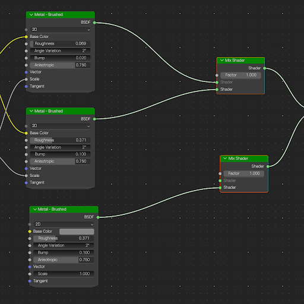
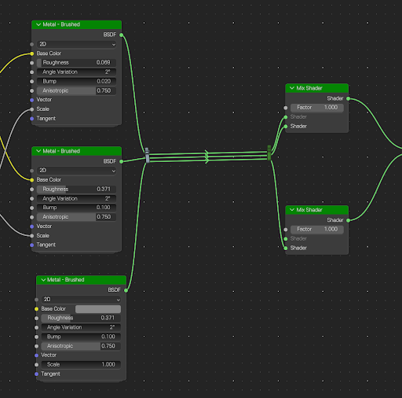
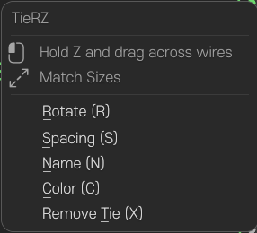

노드 와이어를 케이블 타이로 정리하세요
복잡하게 얽힌 와이어 위를 마우스 제스처로 쓱 그어, 자유롭게 정리하세요.
최신 Blender 5.3 Beta & 5.4 Alpha 환경에서 테스트 되었습니다.
(이전버전들은 테스트 되지 않았습니다.)


실제 조작법 & 우클릭 메뉴 매뉴얼
TieRZ의 핵심 단축키 조작법입니다.

• 타이 칼라 위에서 마우스 우클릭 시 호출
• 각 항목의 밑줄 문자(R, S, N, C, X)가 즉시 단축키로 매핑
Hold Z and drag across wires: Z 키를 누른 상태에서 마우스로 전선을 가로질러 그으면 교차된 링크들을 케이블 타이로 즉시 결속합니다.
Match Sizes: 여러 개의 타이를 함께 선택했을 때 타이블럭들의 너비와 크기를 균일하게 일치시켜 정렬합니다.
Rotate (R): 마우스 드래그로 타이 각도를 자유롭게 회전(자유 각도 회전)시켜 전선의 유입/유출 방향에 맞게 하네스 각도를 조절합니다.
Spacing (S): 묶인 와이어들 사이의 간격을 조절하여 빽빽하거나 여유 있게 정돈합니다.
Name (N): 케이블 타이 하네스에 라벨 이름을 지정하거나 변경하여 노드 구획을 식별합니다.
Color (C): 타이와 결속 전선에 식별 컬러 태그를 부여하여 그룹별 시각적 구분을 돕습니다.
전선 연결은 그대로 보존하면서 타이만 디졸브(해제)합니다. 연결 흐름이 끊기지 않습니다.
인터랙티브 단축키 & 키맵 매트릭스
Shader, Geometry, Compositing 노드 에디터를 위한 빠른 조작 레퍼런스
| 기능 / 동작 | 단축키 | 적용 컨텍스트 | 세부 동작 설명 |
|---|---|---|---|
Hold Z and drag across wires (와이어 결속) | Z (Hold)+드래그 | 노드 에디터 | 교차 와이어들을 가로질러 케이블 타이 결속 |
Match Sizes (타이 크기 일치) | Alt+S | 다중 선택 | 선택된 타이들의 크기와 너비를 균일화 |
Rotate (회전) | R | 활성 타이 | 타이 각도 자유 회전 (마우스 드래그로 자유롭게 회전) |
Spacing (간격 조절) | S | 활성 타이 | 번들 내부 와이어 사이 간격 확장/축소 |
Name (이름 지정) | N | 활성 타이 | 타이 라벨명 입력 및 식별자 설정 |
Color (컬러 태그) | C | 활성 타이 | 타이 컬러 및 와이어 틴트 순환 변경 |
Remove Tie (타이 제거) | X | 선택된 타이 | 연결을 유지한 채 타이만 해제 (Dissolve) |
Grab (노드 및 타이 이동) | G | 전역 노드 그래프 | 블렌더 기본 조작과 동일하게 노드 및 타이 동기화 이동 |
일치하는 단축키를 찾을 수 없습니다. 검색어를 변경해 보세요.
60초 빠른 설치 가이드
외부 라이브러리 설치 필요 없음. 블렌더 공식 버전에 즉시 설치 가능.
릴리즈 다운로드
GitHub Releases에서 최신 아카이브 최신 릴리즈을 직접 다운로드하세요. (.zip 압축 해제 불필요)
환경설정 열기
블렌더 상단 메뉴에서
Edit > Preferences... > Add-ons(또는 4.2+ / 5.x의 Get Extensions)로 이동 후 Install...을 클릭합니다.
애드온 활성화
검색창에서 TieRZ를 검색하고 체크박스를 활성화하여 오퍼레이터 훅과 HUD 모달을 켭니다.
사이드바 [N] 확인
Shader 또는 Geometry 에디터에서 키보드의 N 키를 눌러 새롭게 추가된 TieRZ 탭을 확인하세요.
NODE ZIP TIE의 선구적인 아이디어에서 출발했습니다. 오리지널 제작진과 커뮤니티 테스터 분들께 깊이 감사드립니다.
MACHOCAT 마스코트 캐릭터 저작권 © NARZ & 박냥냥. Machocat 개발 및 유지보수.
GNU General Public License v3.0 (GPL-3.0-or-later)에 따라 배포됩니다. 개인 및 상업적 3D 프로덕션에서 자유롭게 무료로 사용 가능합니다.
블렌더 노드 그래프를 깔끔하게 정리할 준비가 되셨나요?
TieRZ 최신 버전 zip 아카이브를 다운로드하여 지금 바로 셰이더, 컴포지터, 지오메트리 노드 트리에 물리적인 케이블 타이를 장착해 보세요.